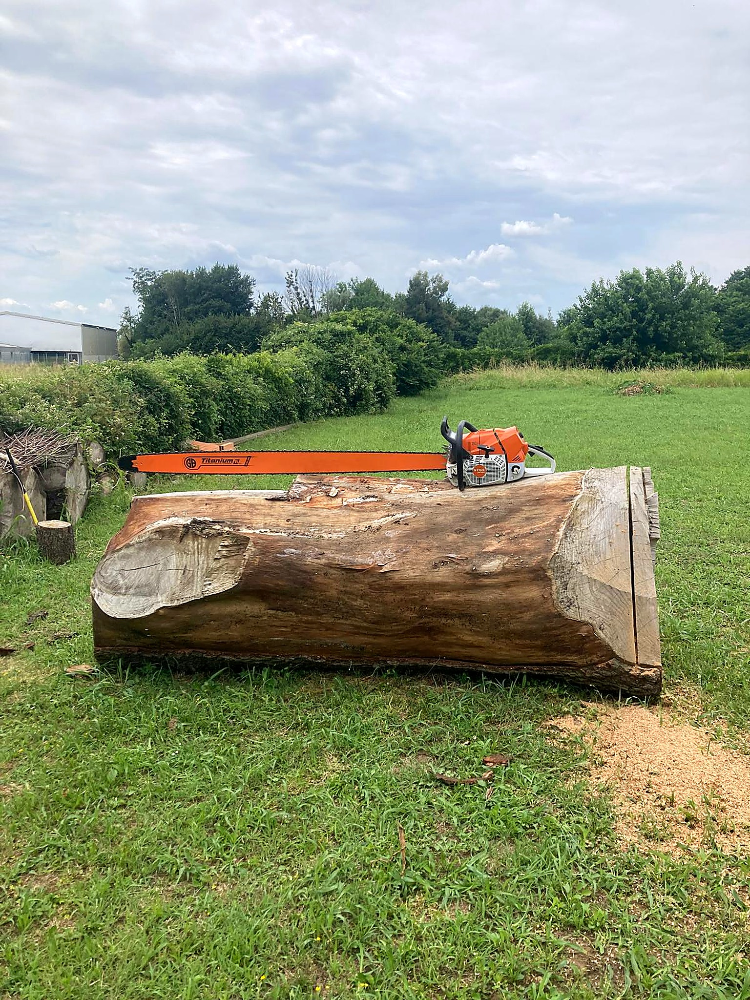
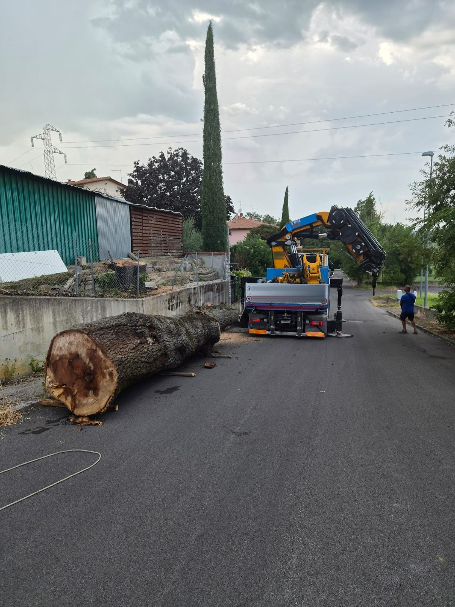
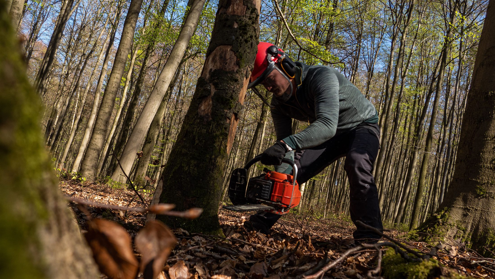

Esperienza, studio e cura del dettaglio.
Un ceppo lasciato lì continua a lavorare
Tolto l'albero resta il ceppo, e non è solo un ostacolo estetico. Occupa un volume di terreno che non si può usare, blocca la lavorazione del suolo intorno e rende impossibile livellare o pavimentare quel punto.
Su diverse specie il problema è più concreto. Robinia, ailanto e pioppo ributtano dalla ceppaia e dalle radici anche a distanza di anni dal taglio, e i ricacci non escono solo dove c'era il tronco: seguono tutto lo sviluppo radicale, prato compreso. Finché la ceppaia è viva, l'abbattimento non ha chiuso niente, e tagliare i ricacci ogni primavera è una manutenzione che non finisce.
C'è poi la parte che non si vede. Una ceppaia che si decompone è materiale organico in degradazione dentro il terreno: le radici perdono volume, il suolo sopra si assesta e cede, e su alcune specie restano attivi funghi di degradazione mentre il legno marcisce. È una delle ragioni per cui la posizione di una pianta nuova si valuta invece di darla per scontata. Il ceppo è quello che resta dopo un abbattimento controllato: la pianta è a terra, ma sul terreno il lavoro non è ancora finito.

Fresatura o estrazione: due strade, due esiti
Va detta anche una cosa che si scopre spesso a lavoro iniziato: sotto la corteccia i ceppi sono raramente puliti. Terra, sassi e frammenti metallici entrati nel legno negli anni rallentano qualsiasi metodo, e sono il motivo per cui due ceppi identici a vedersi richiedono tempi diversi.
Le due strade
Fresatura
Estrazione con mezzo
Come si lavora
La fresatura riduce il ceppo in trucioli scendendo sotto il livello del terreno. Non chiede grandi spazi di manovra, si lavora vicino a muri e pavimentazioni e il giardino intorno resta come prima. Quello che non fa è togliere le radici laterali: restano dove sono e si decompongono nel tempo. Per un prato, un'aiuola o una pavimentazione leggera è quasi sempre sufficiente.
L'estrazione con mezzo tira fuori il ceppo insieme a buona parte dell'apparato radicale. Lascia una buca vera, terreno smosso e ha bisogno di accesso per il mezzo e di spazio per lavorare, quindi non è una strada praticabile ovunque. Diventa però l'unica quando in quel punto deve andarci qualcosa che non tollera il vuoto lasciato dalle radici in decomposizione: una fondazione, una piscina, una struttura fissa.
Come si sceglie
La scelta non dipende dalla dimensione del ceppo, ma da cosa ci andrà sopra e da come si arriva sul posto. Sono le due cose che si stabiliscono in sopralluogo.
Quello che passa sotto un ceppo

- Non scendere alla cieca vicino a un muretto senza fondazione.
- Non forzare la profondità per chiudere in giornata.
- Non lavorare a ridosso di una pianta che resta senza sapere dove arrivano le sue radici.
Sotto un ceppo, in un giardino già fatto, passa quasi sempre qualcosa. Le linee dell'impianto di irrigazione seguono volentieri il bordo delle aiuole, i cavi dell'illuminazione corrono a poca profondità, e in un giardino rifatto più volte nessuno ricorda più dove.
Per lo stesso motivo si guarda cosa c'è in superficie prima di iniziare. Un muretto senza fondazione, una pavimentazione posata su letto sottile o una pianta vicina con le radici intrecciate a quelle del ceppo cambiano la profondità a cui si può arrivare, e a volte spostano la scelta da un metodo all'altro. Dove il quadro non è chiaro si procede per gradi e si verifica scendendo, invece di forzare per finire prima.
FAQ
Domande sulla rimozione della ceppaia
Serve sempre togliere la ceppaia dopo un abbattimento?
No. Se in quel punto non deve andarci niente e la specie non ributta, un ceppo può essere lasciato dov'è e degradarsi da solo.
La rimozione diventa necessaria quando lì sopra ci va un prato, una pavimentazione o una pianta nuova, quando il ceppo è d'intralcio al passaggio dei mezzi, o quando la specie continua a emettere ricacci. Fuori da questi casi è una scelta, non un obbligo tecnico.
Dopo la fresatura si riempie subito la buca?
Si riempie, ma sapendo che il terreno lavorerà ancora. I trucioli rimasti nel foro sono legno, e il legno perde volume mentre si decompone: nei mesi successivi la superficie tende a calare.
Per questo, dove sopra ci va un prato o una pavimentazione, conviene togliere buona parte del truciolo e riempire con terreno, poi ricaricare quando l'assestamento si è visto. Chiudere e finire tutto in giornata è la strada che poi lascia un avvallamento.
Un ceppo lasciato nel terreno può creare problemi alle altre piante?
Può, ma non è automatico. Un ceppo in decomposizione è substrato per funghi che degradano il legno, e alcuni di questi possono passare a radici vicine se trovano una pianta già in difficoltà.
Il rischio cresce quando l'albero era stato tolto proprio per un problema sanitario. In quel caso lasciare la ceppaia significa lasciare in terra il materiale da cui il problema partiva, e conviene deciderlo insieme all'abbattimento invece che dopo.